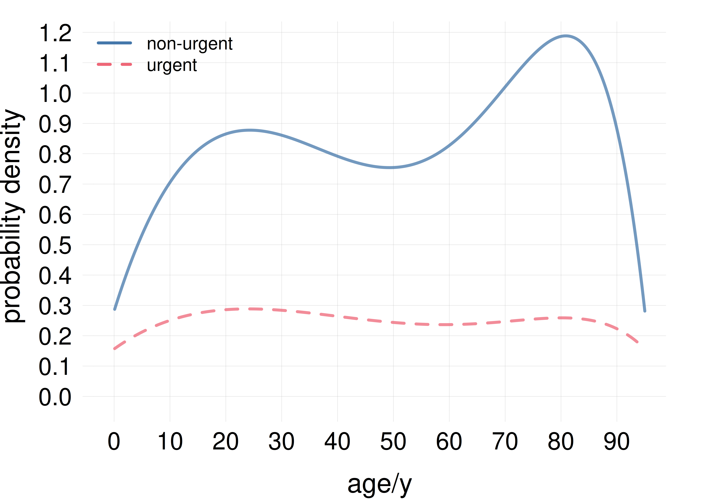

15 Joint probability distributions
\[ \DeclarePairedDelimiters{\set}{\{}{\}} \DeclareMathOperator*{\argmax}{arg\,max} \]
So far we have considered probability distributions for quantities of a basic (binary, nominal, ordinal, interval) type. These distributions have a sort of one-dimensional character and can be represented by ordinary histograms, line plots, and scatter plots. We now consider probability distributions for the kind of joint quantities that were discussed in § 13.1.
15.1 Joint probability distributions
A joint quantity is just a collection or set of quantities of basic types. Saying that a joint quantity has a particular value means that each basic component quantity has a particular value in its specific domain. This is expressed by an and of sentences.
Consider for instance the joint quantity \(X\) consisting of the age \(\color[RGB]{102,204,238}A\) and sex \(\color[RGB]{34,136,51}S\) of a specific person. The fact that \(X\) has a particular value is expressed by a composite sentence such as
\[ \textsf{\small`The person's age is 25 years and the person's sex is female'} \]
which we can compactly write with an and:
\[ {\color[RGB]{102,204,238}A\mathrel{\nonscript\mkern-2.5mu\textrm{\small=}\nonscript\mkern-2.5mu}25\,\mathrm{y}} \land {\color[RGB]{34,136,51}S\mathrel{\nonscript\mkern-2.5mu\textrm{\small=}\nonscript\mkern-2.5mu}\mathrm{f}} \]
All the possible composite sentences of this kind are mutually exclusive and exhaustive.
An agent’s uncertainty about \(X\)’s true value is therefore represented by a probability distribution over all and-ed sentences of this kind, representing all possible joint values:
\[ \mathrm{P}\bigl({\color[RGB]{102,204,238}A \mathrel{\nonscript\mkern-2.5mu\textrm{\small=}\nonscript\mkern-2.5mu}25\,\mathrm{y}} \land {\color[RGB]{34,136,51}S\mathrel{\nonscript\mkern-2.5mu\textrm{\small=}\nonscript\mkern-2.5mu}\mathrm{f}} \nonscript\:\vert\nonscript\:\mathopen{} \mathsfit{I}\bigr) \ , \qquad \mathrm{P}\bigl({\color[RGB]{102,204,238}A \mathrel{\nonscript\mkern-2.5mu\textrm{\small=}\nonscript\mkern-2.5mu}31\,\mathrm{y}} \land {\color[RGB]{34,136,51}S\mathrel{\nonscript\mkern-2.5mu\textrm{\small=}\nonscript\mkern-2.5mu}\mathrm{m}} \nonscript\:\vert\nonscript\:\mathopen{} \mathsfit{I}\bigr) \ , \qquad \dotsc \]
where \(\mathsfit{I}\) is the agent’s state of knowledge, and the probabilities sum up to one. We call each of these probabilities a joint probability, and their collection a joint probability distribution. Usually these probabilities are written in much abbreviated form, and a comma “\(\mathbin{\mkern-0mu,\mkern-0mu}\)” is used instead of “\(\land\)” (§ 6.4); for instance you can commonly find the following notation:
\[ \mathrm{P}(A\mathrel{\nonscript\mkern-2.5mu\textrm{\small=}\nonscript\mkern-2.5mu}25 \mathbin{\mkern-0mu,\mkern-0mu}S\mathrel{\nonscript\mkern-2.5mu\textrm{\small=}\nonscript\mkern-2.5mu}\mathrm{f} \nonscript\:\vert\nonscript\:\mathopen{} \mathsfit{I}) \]
or even just
\[ \mathrm{P}(25, \mathrm{f} \nonscript\:\vert\nonscript\:\mathopen{} \mathsfit{I}) \]
15.2 Representation of joint probability distributions
There is a wide variety of ways of representing joint probability distributions, and new ways are invented (and rediscovered) all the time. In some cases, especially when the quantity has more than three component quantities, it can become impossible to graphically represent the probability distribution in a faithful way. Therefore one often tries to represent only some aspects or features of interest from the full distribution. Whenever you see a plot of a joint probability distribution, you should carefully read what the plot shows and how it was made. Here we only illustrate some examples and ideas for representations.
Tables
When a joint quantity consists of two, discrete and finite component quantities, the joint probabilities can be reported as a table.
Example: Consider the next patient that will arrive at a particular hospital. There’s the possibility of arrival by ambulance, helicopter, or other transportation means; and the possibility that the patient will need urgent non-urgent care. These can be seen as two quantities \(T\) (nominal) and \(U\) (binary). When these two quantities are taken together; their joint probability distribution is as follows, conditional on the hospital’s data \(\mathsfit{I}_{\text{H}}\):
| \(\mathrm{P}(U\mathrel{\nonscript\mkern-2.5mu\textrm{\small=}\nonscript\mkern-2.5mu}u \mathbin{\mkern-0mu,\mkern-0mu}T\mathrel{\nonscript\mkern-2.5mu\textrm{\small=}\nonscript\mkern-2.5mu}t\nonscript\:\vert\nonscript\:\mathopen{}\mathsfit{I}_{\text{H}})\) | transportation at arrival \(T\) | |||
| ambulance | helicopter | other | ||
| urgency \(U\) | urgent | 0.11 | 0.04 | 0.03 |
| non-urgent | 0.17 | 0.01 | 0.64 | |
We see for instance that the most probable possibility is that the next patient will arrive by transportation means other than ambulance and helicopter, and won’t require urgent care:
\[\mathrm{P}(U\mathrel{\nonscript\mkern-2.5mu\textrm{\small=}\nonscript\mkern-2.5mu}\textrm{\small non-urgent} \mathbin{\mkern-0mu,\mkern-0mu}T\mathrel{\nonscript\mkern-2.5mu\textrm{\small=}\nonscript\mkern-2.5mu}\textrm{\small other}\nonscript\:\vert\nonscript\:\mathopen{}\mathsfit{I}_{\text{H}}) = 0.64\]
It is also possible to replace the numerical probability values with graphical representations; for example as shades of a colour, or squares with different areas.
Scatter plots and similar
Probability distributions for nominal, ordinal, or discrete-interval quantities can be represented by histograms or line plots, as we saw in § 14.2. Histograms could be generalized to quantities consisting of two joint discrete quantities: a probability could be represented by a cuboid or rectangular prism (a sort of small tower with rectangular section), or cylinder, or similar. This representation, even if it can look flamboyant, is often inconvenient because some of the three-dimensional objects can be hidden from view, as in the generic example on the side.
 Example of generalized histogram (from Mathematica)
Example of generalized histogram (from Mathematica)
Alternatively, one can replace the numerical values of the probabilities in the tabular representation of the previous section with some graphical encoding.
An example is some colour scheme, say white for probability \(0\), black for probability \(1\), and grey levels for intermediate probabilities; or some other colour scheme. This is sometimes called a “density histogram”; see the generic example on the side. This representation can be useful for qualitative or semi-quantitative assessments, for example seeing which joint values have highest probabilities.
 Example of density histogram (from Mathematica)
Example of density histogram (from Mathematica)
Another example, similar to the scatter plot (§ 14.4.2), is to encode the probability values with a proportional number of points or other shapes, as illustrated here for the probabilities of table 15.1:

the points do not need to be scattered in regular fashion as long as it’s clear which quantity value they are associated with. The scatter plot above has 100 points, and therefore we can see for instance that \(\mathrm{P}(U\mathrel{\nonscript\mkern-2.5mu\textrm{\small=}\nonscript\mkern-2.5mu}\textrm{\small urgent} \mathbin{\mkern-0mu,\mkern-0mu}T\mathrel{\nonscript\mkern-2.5mu\textrm{\small=}\nonscript\mkern-2.5mu}\textrm{\small helicopter}\nonscript\:\vert\nonscript\:\mathopen{}\mathsfit{I}_{\text{H}}) = 0.03\), since the corresponding region has 3 points out of 100.
15.3 Joint probability densities
If a joint quantity consists in several continuous interval quantities, then its joint probability distribution is usually represented by a joint probability density, which generalize the one-dimensional discussion of § 14.3 to several dimensions.
For instance, if \(X\) and \(Y\) are two continuous interval quantity, then the notation
\[ \mathrm{p}(X\mathrel{\nonscript\mkern-2.5mu\textrm{\small=}\nonscript\mkern-2.5mu}x \mathbin{\mkern-0mu,\mkern-0mu}Y\mathrel{\nonscript\mkern-2.5mu\textrm{\small=}\nonscript\mkern-2.5mu}y \nonscript\:\vert\nonscript\:\mathopen{} \mathsfit{I}) = 0.001 \]
means that the joint sentence “\(X\) has value between \(x-\epsilon/2\) and \(x+\epsilon/2\), and \(Y\) between \(y-\delta/2\) and \(y+\delta/2\)”, or in symbols
\[ \bigl(x-\tfrac{\epsilon}{2} \mathrel{\nonscript\mkern-2.5mu\textrm{\small<}\nonscript\mkern-2.5mu} X \mathrel{\nonscript\mkern-2.5mu\textrm{\small<}\nonscript\mkern-2.5mu} x+\tfrac{\epsilon}{2}\bigr) \land \bigl(y-\tfrac{\delta}{2} \mathrel{\nonscript\mkern-2.5mu\textrm{\small<}\nonscript\mkern-2.5mu} Y \mathrel{\nonscript\mkern-2.5mu\textrm{\small<}\nonscript\mkern-2.5mu} y+\tfrac{\delta}{2}\bigr) \]
has probability \(0.001\cdot\epsilon\cdot\delta\), conditional on the background knowledge \(\mathsfit{I}\). Said otherwise, the rectangular region of values around \((x,y)\) with widths \(\epsilon\) and \(\delta\) is assigned a probability \(0.001\cdot\epsilon\cdot\delta\).
Remember that a density typically has physical units, as in the one-dimensional case (§ 14.3). For instance, if \(X\) above is a temperature measured in kelvin (\(\mathrm{K}\)) and \(Y\) a resistance measured in ohm (\(\Omega\)), then we would write \(\mathrm{p}(X\mathrel{\nonscript\mkern-2.5mu\textrm{\small=}\nonscript\mkern-2.5mu}x \mathbin{\mkern-0mu,\mkern-0mu}Y\mathrel{\nonscript\mkern-2.5mu\textrm{\small=}\nonscript\mkern-2.5mu}y \nonscript\:\vert\nonscript\:\mathopen{} \mathsfit{I}) = \frac{0.001}{\mathrm{K}\,\Omega}\).
15.4 Representation of joint probability densities
For one-dimensional densities we discussed line-based representations and scatter plots (§ 14.4). The first of these representations can be generalized to two-dimensional densities, leading to a surface density plot. Below is the surface density plot for the probability density given by the formula
\[ \mathrm{p}(X\mathrel{\nonscript\mkern-2.5mu\textrm{\small=}\nonscript\mkern-2.5mu}x \mathbin{\mkern-0mu,\mkern-0mu}Y\mathrel{\nonscript\mkern-2.5mu\textrm{\small=}\nonscript\mkern-2.5mu}y \nonscript\:\vert\nonscript\:\mathopen{} \mathsfit{I}) = \tfrac{3}{8\sqrt{2}\,\pi}\, \mathrm{e}^{-\frac{1}{2} (x-1)^2-(y-1)^2}+ \tfrac{3}{32\,\pi}\,\mathrm{e}^{-\frac{1}{8} (x-2)^2-\frac{1}{2} (y-4)^2}+ \tfrac{1}{8\,\sqrt{5}\,\pi}\,\mathrm{e}^{-\frac{1}{4} (x-5)^2-\frac{1}{5} (y-2)^2} \]

This kind of representation can be very neat, but it has two drawbacks: it sometimes hides features of the density from view, and it cannot be extended to three-dimensional densities.
The scatter plot instead does not hides features and can also be used for three-dimensional densities. It is, however, quantitatively more imprecise. Here is the scatter plot for the probability density given above:

As usual, the probability of a small region is proportional to the number of points in that region. If we had a joint density for three continuous quantities, its scatter plot would consist of three-dimensional clouds of points instead.
Clearly both kinds of representation have advantages and disadvantages.
Multi-line plots
Joint probability distributions over one discrete and one continuous quantity (or ordinal discrete with numerous values) can be represented as a collection of line plots: each line plot represent the probability density for the continuous quantity and a specific value of the discrete quantity.
Consider for instance the probability that the next patient who arrives at a particular hospital has a given age (continuous quantity) and may require urgent care or not (binary quantity). The joint probability density is depicted by the following plot:

The area under the solid blue curve is equal to 0.75, and the area under the dashed red curve is equal to 0.25. The two areas overlap. The total area under the two curse (the overlapping region is counted twice) is equal to 1, as it should be.
From the plot we see that the probability of urgent patients (dashed red curve) is generally lower than non-urgent ones (solid blue curve). A possible disadvantage of this kind of plots is that the details, such as peaks, of the densities for some values of the discrete quantity may be barely visible.